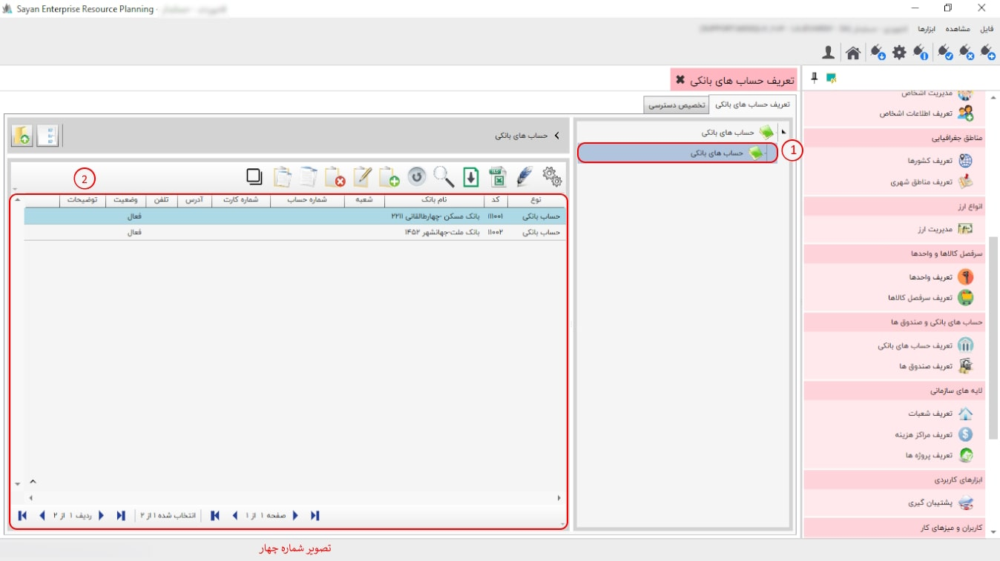

این گزینه به شما امکان ایجاد و گروه بندی حساب های بانکی را می دهد پیشنهاد می شود ابتدا حسابهای بانکی خود را گروه بندی کنید، سپس حسابهای مربوط به هر گروه را در درون آن تعریف نمایید، برای تعریف گروه یا ایجاد حساب بانکی از نوار ابزار گزینه ی اضافه یا F8 را بزنید، تصویر زیر نمایان می شود:

برای ادامه مطلب به تصویر شماره دو مراجعه نمایید.

-تعریف حساب های بانکی(کادر شماره یک):این بخش،این امکان را به شما می دهد که حساب های بانکی خود را تعریف و مشاهده نمایید.
-حساب های بانکی (کادر شماره دو):در این قسمت می بایست گروه حساب های بانکی خود را تعریف نمایید.
-کادر شماره سه:در این بخش گروه حساب های بانکی که تعریف کرده اید را می توانید مشاهده کنید.
برای ادامه مطلب به تصویر شماره سه مراجعه نمایید.
-کادر شماره یک :در این قسمت برای تعریف حساب های بانکی روی گروه کلیک نمایید.
-کد جزء (کادر شماره دو):تعداد ارقام وارد شده در کد نشاندهنده حداکثر تعداد ردیفهایی است که میتوانید در آن گروه یا زیرگروه ایجاد کنید. همچنین، این تعداد ارقام بر تعداد نهایی نیز تأثیرگذار است.
-وضعیت (کادر شماره سه):
-نام گروه (کادر شماره چهار):در این آیتم می توانید نام گروه خود را وارد نمایید.
-توضیحات (کادر شماره پنج):در این قسمت می توانید توضیحات حساب بانکی خود را وارد نمایید.
برای ادامه مطلب به تصویر شماره چهار مراجعه نمایید.
-حساب های بانکی (کادر شماره یک):در این قسمت می توانید زیر مجموعه حساب های بانکی خود را تعریف نمایید.
-کادر شماره دو:در این بخش می توانید حساب های بانکی که تعریف کرده اید را مشاهده کنید.
برای ادامه مطلب به تصویر شماره پنج مراجعه نمایید.

-کادر شماره یک:در این قسمت برای ایجاد تفضیل بانک ها روی گزینه حساب های بانکی تان کلیک نمایید.
-کد جزء (کادر شماره دو):تعداد ارقام وارد شده در کد نشاندهنده حداکثر تعداد ردیفهایی است که میتوانید در آن گروه یا زیرگروه ایجاد کنید. همچنین، این تعداد ارقام بر تعداد نهایی نیز تأثیرگذار است.
-شعبه (کادر شماره سه):در این قسمت شعبه بانکی خود را وارد نمایید.(الزامی نیست)
-شماره کارت(کادر شماره چهار):در این بخش شماره کارت بانکی خود را وارد نمایید.
-تلفن(کادر شماره پنج):در این قسمت تلفن خود را وارد نمایید.(الزامی نیست)
-توضیحات (کادر شماره شش):در این بخش توضیحات بانکی خود را وارد نمایید.(الزامی نیست)
-نام بانک(کادر شماره هفت):در این قسمت نام بانک خود ا به همراه آدرس و کد وارد نمایید.
-شماره حساب (کادر شماره هشت):در این بخش شماره حساب بانکی خود را وارد نمایید.
-آدرس (کادر شماره نه ):در این بخش آدرس را وارد نمایید(الزامی نیست)
-وضعیت(کادر شماره ده):
برای ادامه مطلب به تصویر شماره شش مراجعه نمایید.

-تخصیص دسترسی:
-کادر شماره دو:
-موارد انتخاب شده(کادر شماره سه):
-موارد انتخاب نشده(کادر شماره چهار ):

-کادر شماره پنج:

-کادر شماره شش: